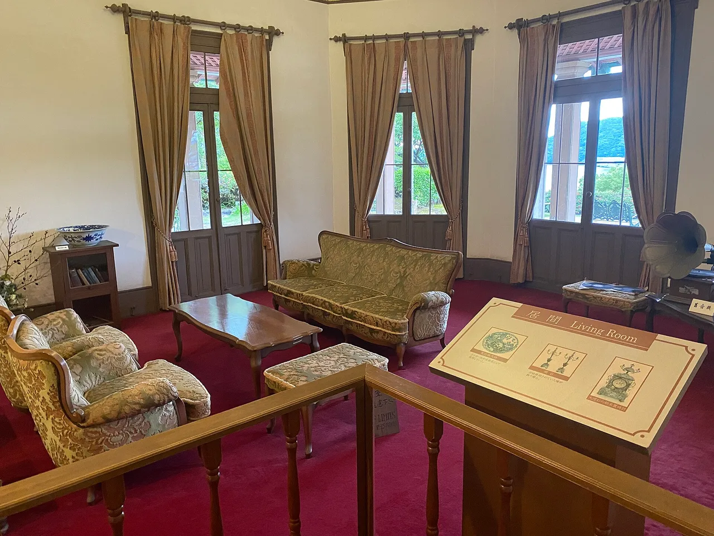

Nagasaki Travel Guide for Japanese Learners
A port city of cross-cultural history, hillside views, and a peace park.

Nagasaki was Japan's window to the world during its isolation, leaving Dutch, Chinese, and Christian heritage. It also remembers 1945 with its Peace Park.
History & background
Nagasaki (長崎) was Japan's only window to the West during its isolation, trading via the man-made island of Dejima (出島). It carries Dutch, Chinese, and Christian heritage — and the memory of 9 August 1945.
What to see
- Glover Garden and harbor views
- Nagasaki Peace Park
- Dejima former Dutch trading post
- Gunkanjima (Hashima Island)
Hidden gems
- Sofuku-ji Temple showcases stunning Chinese-influenced architecture and a three-story pagoda reflecting Nagasaki's Buddhist traditions from the Ming Dynasty era.
- Koshikijima Island offers pristine beaches, hiking trails, and rural coastal charm far quieter than main tourist spots, accessible by ferry from Nagasaki port.
- Tagami Shotengai is a lively covered shopping arcade where locals browse fresh produce, vintage items, and family-run shops unchanged for decades.
Some links above are affiliate links. We may earn a commission at no extra cost to you. We only list services we'd use ourselves.
What to eat
Champon and sara-udon noodles; castella sponge cake.
Getting there & when to go
Getting there: Nagasaki is ~1h30m from Fukuoka via the Nishi-Kyūshū Shinkansen + transfer.
Best time: Any season; the night view from Mount Inasa is famous year-round.
When to go — season by season
Year-round; the night view from Mount Inasa (稲佐山) is famous in every season. Lunar New Year brings a vivid Chinatown lantern festival.
Local culture
Nagasaki's unique fusion cuisine blends Japanese, Chinese, and Portuguese influences—notice how locals casually order champon with both noodles and seafood in one bowl, a distinctly Nagasaki comfort food born from the port's trading history.
The dialect here (Nagasaki-ben) preserves softer vowel endings and unique sentence-final particles that differ markedly from Tokyo Japanese, reflecting centuries of isolation and regional identity that locals take quiet pride in.
A suggested visit
Walk Glover Garden (グラバー園) and the harbour, reflect at the Peace Park, tour reconstructed Dejima, then ride the ropeway up Mount Inasa for one of Japan's best night views.
Seasonal tip: Visit between late October and early November for ideal weather to hike Mount Inasa and Gunkanjima tours, as summer heat and humidity peak in July–August and winter fog occasionally cancels island excursions.
Local etiquette: At the Peace Park and Museum, maintain quiet reverence and avoid casual photography in memorial halls; this is a space of remembrance where respectful behavior is especially important to local visitors and survivors' families.
Mount Inasa's night view is rated among Japan's three best — go up by ropeway after dark.
Some links above are affiliate links. We may earn a commission at no extra cost to you. We only list services we'd use ourselves.
Common questions
Q. How do I get to Nagasaki from Fukuoka?
A. Take the Nishi-Kyūshū Shinkansen from Fukuoka (~1 hour 30 minutes total with a transfer). Book your shinkansen ticket in advance during peak seasons to avoid sold-out departures.
Q. What's the best time to visit Nagasaki?
A. Any season works, but Mount Inasa's night view is stunning year-round—visit after sunset for minimal crowds and the clearest city lights reflection on the harbor.
Q. What should I eat in Nagasaki?
A. Try champon and sara-udon noodles, local specialties that blend Chinese and Japanese flavors. Pair with castella sponge cake, a Portuguese-influenced dessert with deep local roots.